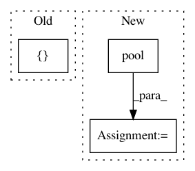

9addf8e81b605208562d2aee90f9ac0c2c993d45,opennre/module/pool/max_pool.py,MaxPool,forward,#MaxPool#Any#Any#,25
Before Change
B, L, I_EMBED = x.size()[:2]
mask = 1 - self.mask_embedding(mask).transpose(1, 2).unsqueeze(2) // (B, L) -> (B, L, S) -> (B, S, L) -> (B, S, 1, L)
x = x.transpose(1, 2).unsqueeze(1) // (B, L, I_EMBED) -> (B, I_EMBED, L) -> (B, 1, I_EMBED, L)
x = (x + self._minus * mask).view([-1, I_EMBED, L]) // (B, S, I_EMBED, L) -> (B * S, I_EMBED, L)
x = self.pool(x).squeeze(-1) // (B * S, I_EMBED, 1) -> (B * S, I_EMBED)
x = x.view([B, -1]) // (B, S * I_EMBED)
return x
After Change
// return x
mask = 1 - self.mask_embedding(mask).transpose(1, 2)
x = x.transpose(1, 2)
pool1 = self.pool(x + self._minus * mask[:, 0:1, :])
pool2 = self.pool(x + self._minus * mask[:, 1:2, :])
pool3 = self.pool(x + self._minus * mask[:, 2:3, :])
x = torch.cat([pool1, pool2, pool3], 1)
In pattern: SUPERPATTERN
Frequency: 3
Non-data size: 3
Instances
Project Name: thunlp/OpenNRE
Commit Name: 9addf8e81b605208562d2aee90f9ac0c2c993d45
Time: 2019-11-03
Author: gaotianyu1350@126.com
File Name: opennre/module/pool/max_pool.py
Class Name: MaxPool
Method Name: forward
Project Name: jhfjhfj1/autokeras
Commit Name: 9a387157f03916b2f4f9f63647792dca39942471
Time: 2018-03-29
Author: jin@tamu.edu
File Name: autokeras/generator.py
Class Name: DefaultClassifierGenerator
Method Name: generate